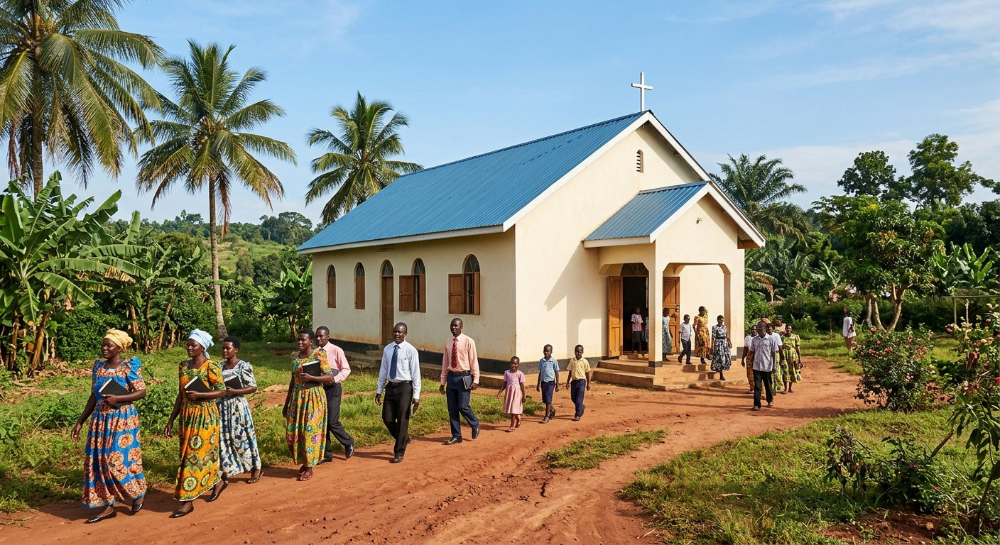

Tema Village Branch
📍 Tema Village, Kampala, Uganda
Our mother church and host of the Anniversary Celebrations & Glory Conference 2026. Lively worship, children's ministry and community outreach every week.
- Sunday: 9:00 AM – 12:30 PM
- Wednesday Fire Service: 5:30 PM
- Morning Glory: Mon–Fri 5:30 AM